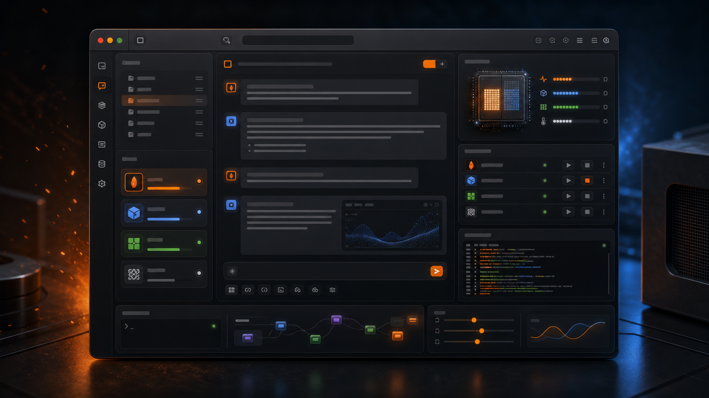

GitHub repository
Star, fork, inspect the Swift source, and file issues or pull requests.
Open repo
Swift · MLX · Apple Silicon · Open source (MIT)
A native macOS workbench that runs MLX and in-process GGUF (llama.cpp) models side by side on Apple Silicon — plus the operator tools that make it useful: adjustable Inkling reasoning, a Forge-themed visual agent graph, explicit prompt drafts, Smart Prompt Select, Brave research, multi-agent dispatch, and a headless command composer for Claude CLI work. Bring your own weights.
Public launch
Forge is open source and free to try today. The release is intentionally source-first: clone the repo, run one installer script, and bring the MLX or GGUF models you already keep on disk. A public drag-and-drop binary will come after Developer ID signing and notarization.
Star, fork, inspect the Swift source, and file issues or pull requests.
Open repoRelease notes track what changed and keep the install boundary clear.
See releasesBuilds, bundles, ad-hoc signs locally, installs /Applications/Forge.app, and opens it.
Two engines, one app
Forge doesn't wrap a Python server or shell out to a daemon. MLX inference runs
in-process via mlx-swift-lm; GGUF runs through a vendored
llama.cpp (LLM.swift) compiled in as a Metal-accelerated
framework. Both answer the same chat and API surfaces.
Forge runs any .safetensors MLX-format model sitting on your disk —
point it at a folder and it discovers them recursively. No weights are pulled over
the network unless you ask: a Hugging Face Hub download path is there as an
opt-in, but local-first is the secure default.
Second engine alongside MLX. A vendored llama.xcframework compiled in
as a Metal-accelerated framework — sandbox-safe, in-process, no daemon. Discovered
recursively from the same folders as MLX.
maxKVSize → 131072)/v1/chat/completions endpointThe app
Native SwiftUI: a sidebar, a chat column, and a fixed-width tuning inspector. Multi-window, real menus, real keyboard shortcuts, real Dock presence — including a Dock icon that animates live fire while a model is generating.
Load several models into unified memory at once; one is active in chat. Explicit load, unload, active, and stop controls, with memory-budget admission control before each load.
Reads tokenizer_config.json / chat_template.jinja at load
to detect enable_thinking toggles, thinking-only templates, and
always-on <think> reasoning — per model.
Edit a prompt as a draft, see Saved or Unsaved state, then explicitly Save or Revert. Clearing the text and saving deliberately returns the model to its default prompt.
Sampling defaults, repetition penalty, KV cache (capped at 10% of RAM, min 2 GB), and thinking-budget controls — tuned for real MLX models, in a fixed-width panel.
A <think>-tag parser splits reasoning from content across MLX,
GGUF, Anthropic, and Brave — so thinking blocks render consistently everywhere.
Checks upstream MLX and GGUF releases once a day and surfaces "update available" in the tuning panel — so you bump on your schedule, not the site's.
The operator loop
Forge wraps the chat surface with the buttons you actually reach for: mode tags, file intake, prompt libraries, Smart Select, Brave-backed research, a bundled design prompt generator, prompt enhancement, multi-agent dispatch, and a code loop that can hand work across planner, coder, auditor, fixer, and tester roles.
Attach a PDF, drop in a screenshot, smart-select the right system prompt, open the design builder, turn on Brave, then dispatch to agents or start the code loop.
Images attach to local VLM paths or MCP photo-review tools. PDFs are text-extracted; text/code files are inlined into the composer with clipping guards.
Add external prompt directories, browse by category, save presets, and run Smart Select so the active model can pick, combine, redraft, and install the best system prompt for the job.
The app hosts the WebKit prompt builder over a private forge-design://
scheme, then pastes the generated prompt straight back into chat.
Web-grounded answers stream through Brave, with country/language settings, citation parsing, usage tags, and a research mode for deeper synthesis.
A wand action rewrites rough prompts into clearer instructions through Anthropic or OpenRouter, while preserving the top-bar depth/style/deliverable tags.
Send the same task to loaded local models, Claude, and OpenRouter, or run the planner -> coder -> auditor -> fixer -> tester loop when you want iteration. The Headless Helper turns the same intent into reviewed Claude CLI commands.
Local API server
Forge serves a local server any OpenAI-SDK agent framework can talk to. Both MLX and
GGUF models answer the same /v1/chat/completions surface — and a request
naming a cold model auto-loads it on demand. It binds to 127.0.0.1 by
default, with explicit LAN exposure only when you turn that on.
GET /v1/models — installed models, loaded ones flaggedPOST /v1/chat/completions — optional stream SSEGET /health · / — liveness + loaded summary.local serving$ curl http://127.0.0.1:3737/v1/chat/completions \
-H "Content-Type: application/json" \
-d '{
"model": "local/8b-4bit",
"messages": [
{"role": "system", "content": "You are a Swift expert."},
{"role": "user", "content": "Explain MLX in one line."}
],
"stream": false
}'
{"id":"...","model":"local/8b-4bit",
"choices":[{"message":{"role":"assistant",
"content":"MLX is Apple's NumPy-like array framework tuned for Metal and Apple Silicon."}}],
"usage":{"prompt_tokens":23,"completion_tokens":19}}Security posture
Binds to 127.0.0.1 by default. The models never leave the machine.
Exact host:port matching defeats DNS-rebinding attacks.
Drive-by browser requests are blocked outright — no model-load DoS from a webpage.
Only a validated loopback origin is ever echoed back in CORS headers.
Anthropic, OpenAI, OpenRouter, Hugging Face, and Brave keys — never plaintext on disk.
Built-in file tools stay inside the roots you allow — symlinks resolved, anything outside is rejected.
Models load from local files by default — no pulling weights over the network unless you opt in.
Model Context Protocol
Forge speaks JSON-RPC 2.0 (protocol 2025-03-26) over HTTP/SSE and stdio.
Edit mcp.json and it applies immediately — no restart.
Any transport leaving the machine must be TLS. Plain HTTP is permitted only on
127.0.0.1, localhost, or ::1.
Enable/disable whole servers and toggle individual tools. Selections persist and are
advertised to tool-calling providers with API-safe names (<server>__<tool>).
A sandbox-safe forge-commander provides read_file,
write_file, list_directory, search_files and
more — path-contained to allowed roots, no external process.
Transparently rewrites args for sequentialthinking and legacy PDF-reader
schemas, so strict tools just work without manual payload edits.
Agents & orchestration
The composer can dispatch the current prompt, top-bar modes, system prompt, and attached images to numbered local models, Claude, and OpenRouter targets. Click several buttons and Forge keeps a live in-flight bar while responses stream back.
Switch from Chat to Forge Graph in the native toolbar, connect model and tool nodes on the customized Rivet canvas, and run them through Forge's local API bridge.
A multi-agent coding loop over OpenRouter, driven by one model slug of your choice
(default qwen/qwen3-coder). Runs in rounds until the tester signs off with
VERDICT: PASS, or maxRounds (default 3) is hit.
A sixth orchestrator role steers the next round when the tester fails.
Composes copy-pasteable commands for external Claude CLI runs: mission prompt, working directories, output folder, model and fallback, output format, permission mode, tool allowlist, MCP config, and system prompt pulled from the same prompt library.
Forge generates the command; the operator runs it. Nothing is executed under the hood.
Cloud optional
The core local path stays local. Cloud providers are opt-in, and every key lives in macOS Keychain.
Wire protocol over URLSession — no SDK dependency.
One key, the whole catalog — plus multi-model fan-out.
Routes chat through the OpenAI Responses API.
openAIModelIDWeb-grounded research chat with citations.
OS-gated roadmap
Forge deploys to macOS 26, while Apple's Foundation Models APIs are macOS 27+.
The source includes the gated bridge for SystemLanguageModel.default
and compiled Core AI bring-your-own-model adapters, but the public runtime path
today is MLX plus in-process GGUF.
SystemLanguageModel.defaultSwiftPM executables
The SwiftPM package exposes the main Forge app plus two optional Swift-native tools. Build the product you need; the app installer handles the release bundle path.
mlx-forge
GUI · SwiftUI
The native macOS workbench described above. Runs as a bare SPM executable that promotes itself to a real app with Dock presence.
mlx-runtime
CLI · headless
Direct, in-process MLX inference. Subcommands: evaluate, batch, chat, lora train|fuse|test|eval, list llm|vlm, serve.
Memory controls on every command: --memory-stats, --cache-size, --memory-size.
mlx-studio
GUI · standalone
An LM-Studio-like native macOS UI that wraps the mlx-runtime binary. Loads a model once in a child process and live-syncs generation controls over a JSON-lines protocol.
Build
A SwiftPM package (Swift 6.2, macOS 26+) that resolves every dependency from public
git sources. The installer builds the release product, compiles the Metal library,
bundles Forge Graph, the design prompt tool, and llama.cpp framework, ad-hoc signs locally, installs
/Applications/Forge.app, and opens it. Public binary downloads still need
Developer ID signing and notarization.
$ git clone https://github.com/christopherbattlefrontlegal/swift-mlx-forge.git
$ cd swift-mlx-forge
$ ./scripts/install-forge-app.sh
# manual developer run:
$ swift build --product mlx-forge
$ swift run mlx-forge
▋Launch it
Star the repo, build the app, point it at your models, and hand a local endpoint to the tools that already speak OpenAI's API shape. MIT-licensed, open source.